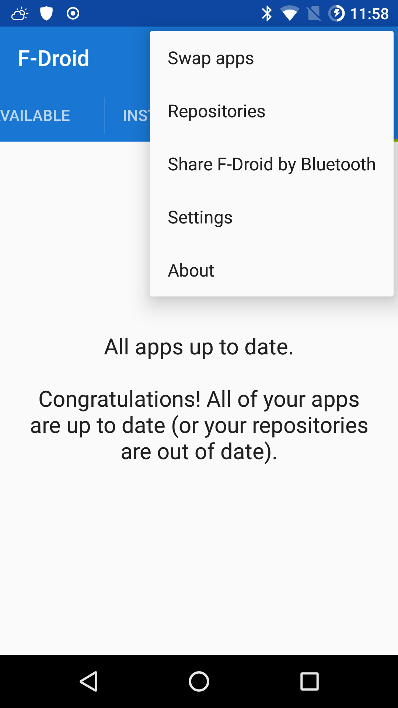

Serve And Share Apps From Your Phone With Fdroid
This can speed up the process of updating apps on your devices, especially if fdroid is slow.
Step 3: you are born on third base, find the menu item for Swap apps on phone one
Open fdroid, and navigate to the menu by touching three dots in upper right hand corner of the screen. Select Swap apps.

Step 4: enable the repo server on phone one
On the next screen toggle on Visible via Wi-Fi

Step 5: a small step for your android
At the bottom of the screen select SCAN QR CODE
Step 6: choose which apps to serve from phone one
At the next screen Choose Apps you want to xerve I mean serve and then touch the -> right arrow to proceed

Step 7: another small step for your android
Touch the -> right arrow again, do it.

Ocho: <- this means step eight
Touch the -> right arrow until you are coming here
 Notice you can use either a qr code or a local url, so grab one of your other phones.
Notice you can use either a qr code or a local url, so grab one of your other phones.
Privacy Friendly Qr Scanner appears to be a good Qr scanner,
but of course you can key in the url by hand too.
Step 9: find the menu item for Repositories on phone two
On your other phone open fdroid, navigate to menu by selecting the 3 dots in the upper right hand corner and choose Repositories

Step 10: (temporarily) toggle off the remote repos on phone two
Toggle all the current repos off and then if you want to key in the new local repo url by hand touch the + plus in the upper right hand corner
Step 11 A: key in the local repo url by hand on phone two
After touching the + plus button in Step Ten on phone two, you can fill in the url address that corresponds to the photo in Ocho

Step 12 A: or scan in the local repo url with qr code on phone two
If you prefer not to key in the url by hand, on phone two touch the home button and then open your qr-scanning application and scan the qr code on phone one, as seen in photo Ocho. The qr-scanning app will direct you to open fdroid, and your result will be the same as the photo in Step Eleven A
Step 13: profit from moar faster local downloads
On phone two you can now download and install apps and updates from phone one, and the download speed will be much faster than from the internet.

Step 14: how to remember all this?
You can bookmark.
In fact, you can add a shortcut icon directly to this page, on your home screen, as seen here with IceCat, a debranded build of the latest extended-support-release of FireFox for Android. Or you can clone the git repo which this site automatically builds itself from.